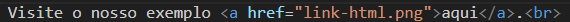

HTML (Linguagem de Marcação de Hipertexto) é o código que você usa para estruturar uma página web e seu conteúdo.
Por exemplo, o conteúdo pode ser estruturado em parágrafos, em uma lista com marcadores ou usando imagens e
tabelas.
Como o título sugere, este artigo fornecerá uma compreensão básica do HTML e suas funções.
As tags de título possuem valor semântico, variando entre seis níveis hierárquicos.
Para definir títulos, utilizamos as tags:
<h1> - <h1>- Título de maior valor hierárquico
<h2> - <h2>
<h3> - <h3>
<h4> - <h4>
<h5> - <h5>
<h6> - <h6>- Título de menor valor hierárquico
Uma página contendo apenas h1 não seria bem vista pelos mecanismos de busca. Portanto, é importante
dividir os títulos deixando o h1 apenas para o título principal, h2 ou h3 para títulos das seções e
h4 a h6 para subtítulos ou títulos que possuam baixo valor hierárquico em relação aos demais.
exemplo:
Principal tag de texto, compõe um parágrafo
exemplo
<p> Hello world!! </p>
A tag <mark> é usada para destacar parte do texto.
exemplo:
Este é um texto de exemplo com <mark>destaque</mark>.
A tag <small> é usada para diminuir o tamanho do texto, indicando que é um texto pequeno ou uma nota de
rodapé.
exemplo:
Texto <small> pequeno</small> ou nota de rodapé.
A tag <i> é usada para colocar o texto em itálico.
exemplo:
Este é um texto em <i>itálico</i>.
A tag <u> é usada para sublinhar o texto.
exemplo:
Este é um texto <u> sublinhado</u>.
A tag <strong> é usada para destacar o texto como importante ou de forte importância.
exemplo:
Este é um texto <strong>forte</strong>.
As tags <ol>, <ul>, e <li> são usadas para criar listas ordenadas (numeradas) e não ordenadas
(com marcadores).
exemplo de lista ordenada:
A tag <a> é usada para criar links.
exemplo:
Visite o nosso exemplo aqui.

A tag <hr> é utilizada para criar uma linha horizontal, que pode ser usada para separar seções do
conteúdo.
exemplo:
As tags <sub> e <sup> são utilizadas para colocar texto como subscrito e sobrescrito,
respectivamente.
exemplo:
H<sub>2</sub>O - Fórmula da água (subscrito)
x<sup>2</sup> - x ao quadrado (sobrescrito)
A tag <blockquote> é utilizada para criar uma citação em bloco, geralmente identificando um trecho de texto
como uma
citação de outra fonte.
exemplo:
<blockquote> "A educação é a arma mais poderosa que você pode usar para mudar o mundo." - Nelson Mandela</blockquote>
A tag <del> é utilizada para indicar texto que foi deletado ou removido.
exemplo:
Este é um texto com uma palavra <del>riscada</del>.
{kind=link}